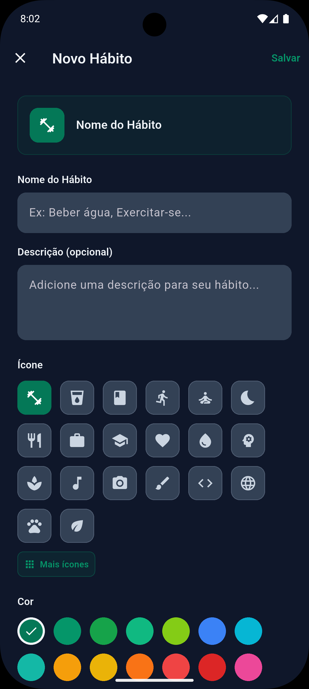
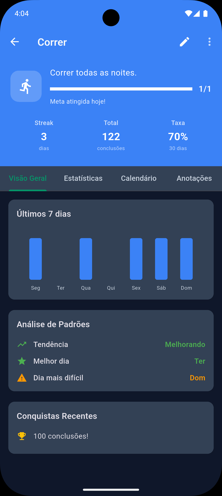
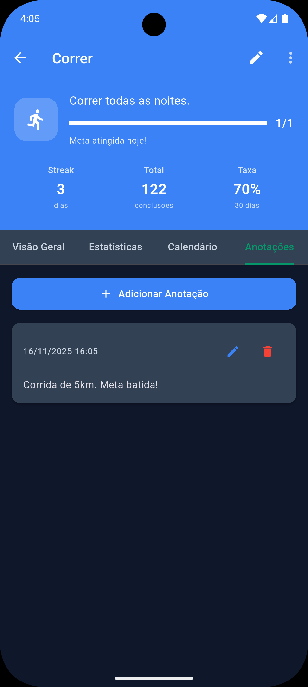

Rastreamento Inteligente
Monitore seu progresso através de gráficos coloridos e intuitivos, no estilo de grade. Cada dia completado é um passo em direção ao seu objetivo.
O BetterDay é seu companheiro diário para criar e manter hábitos saudáveis. Acompanhe seu progresso, mantenha sequências imbatíveis e celebre cada conquista na sua jornada de transformação pessoal.
Monitore seu progresso através de gráficos coloridos e intuitivos, no estilo de grade. Cada dia completado é um passo em direção ao seu objetivo.
Crie hábitos do seu jeito! Escolha entre diversos ícones e cores para dar personalidade a cada objetivo. Sua jornada, suas regras.
Construa sequências épicas de dias consecutivos! Quanto maior seu streak, mais motivado você fica para não quebrar a corrente de sucesso.
Configure lembretes para cada hábito no horário ideal para você. Receba notificações amigáveis que te ajudam a manter o foco.
Documente sua jornada com anotações diárias. Registre sentimentos, desafios superados e insights que surgem ao longo do caminho.
Descubra padrões no seu comportamento com estatísticas detalhadas. Identifique seus melhores dias e otimize sua rotina para o sucesso.
Navegue pelo seu histórico completo com facilidade. Visualize, edite e gerencie seus hábitos em um calendário interativo.
Alterne entre visão diária, semanal e geral conforme sua necessidade. Cada modo oferece uma perspectiva única do seu progresso.
100% de privacidade garantida. Todas as informações ficam armazenadas apenas no seu dispositivo. Sem compartilhamento, sem riscos.
Interface limpa, intuitiva e focada em resultados. Cada tela foi desenvolvida para tornar o rastreamento de hábitos uma experiência agradável e motivadora.
Veja todos os seus hábitos e progresso diário em uma única tela
Acompanhe seu desempenho semanal com estatísticas detalhadas
Visualize o histórico completo com gráficos de tiles coloridos

Customize seus hábitos com ícones e cores variadas

Estatísticas completas, análise de padrões e conquistas

Registre suas reflexões e progresso para cada hábito
Milhares de pessoas já estão construindo uma vida melhor com o BetterDay. Baixe grátis e dê o primeiro passo rumo aos seus objetivos.